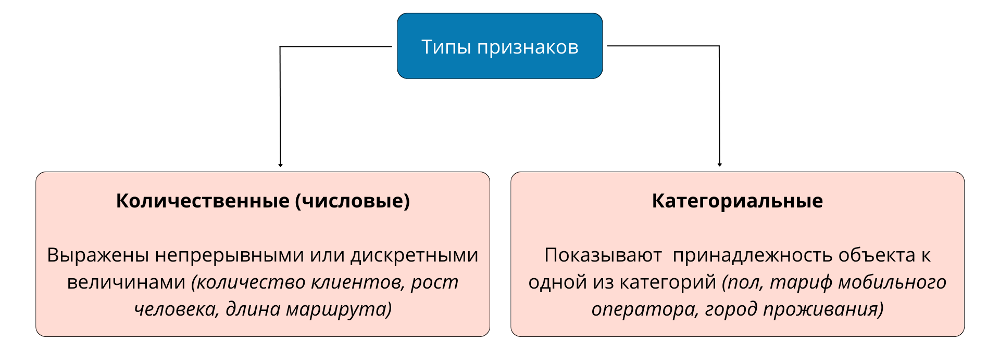
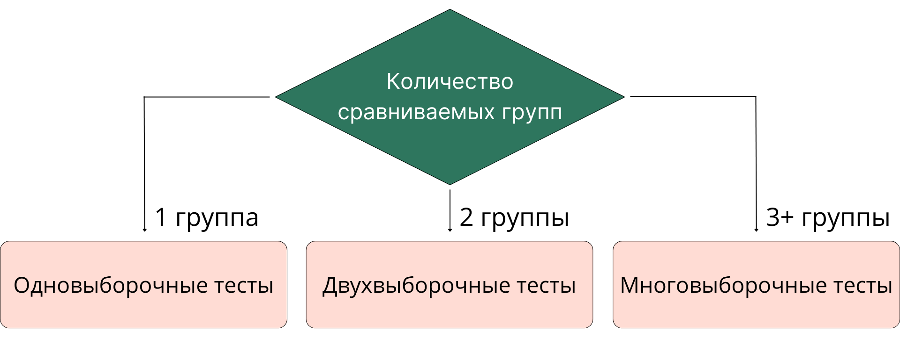
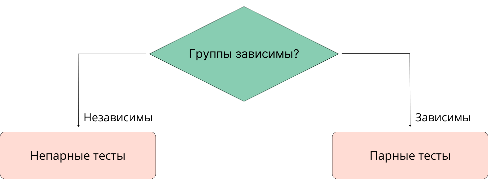
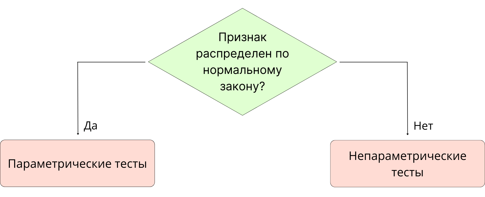
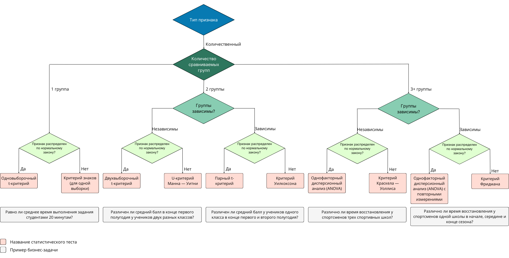

Предыдущий юнит был посвящён выбору статистической значимости. В этом мы разберём выбор статистического теста — это шаг 4 в алгоритме проверки статистической гипотезы.
ОСНОВНЫЕ ТИПЫ СТАТИСТИЧЕСКИХ ТЕСТОВ
Существует множество статистических тестов. Задача дата-сайентиста в том, чтобы выбрать подходящий тест и провести его, получив на выходе p-value. Далее мы разберём, от чего зависит выбор теста, а также их основные типы.
Вспомним, что признаки объектов, которые мы анализируем, делятся на количественные и категориальные.

Для разных типов признаков используются разные статистические тесты.
Далее мы будем говорить о статистических тестах для количественных признаков, так как они состоят из большего числа этапов и задачи с количественными признаками чаще встречаются на практике. Тесты для категориальных признаков мы рассмотрим в юните «Статистические тесты для категориальных признаков».
Выбор статистического теста для количественных признаков зависит от ряда факторов:
- количества анализируемых групп (выборок): одна, две, три и более групп;
- зависимости групп: зависимые и независимые;
- знания о распределении признаков по нормальному закону.
Ниже мы рассмотрим каждый из этих факторов.
КРИТЕРИЙ ВЫБОРА ТЕСТА: КОЛИЧЕСТВО ГРУПП
По количеству анализируемых групп тесты делятся на одновыборочные, двухвыборочные и многовыборочные.

Количество групп определяется значением фактора, влияние которого мы анализируем, например:
- Чтобы определить, достигается ли целевой показатель «среднее время посещения сайта — пять минут», понадобится случайным образом набрать из посетителей этого сайта одну группу.
- Для определения эффекта от лекарства понадобится две группы: пациенты, не принимающие лекарство (контрольная группа), и пациенты, принимающие его (тестовая группа).
- Чтобы выяснить, влияет ли цвет машины на её стоимость, понадобится количество групп, равное анализируемому количеству цветов: белый, чёрный, красный, серый и т. д.
| Тип теста | Пример задачи |
| Одновыборочный | Равно ли среднее время посещения сайта пяти минутам? |
| Двухвыборочный | Выздоравливают ли пациенты, принимающие лекарство, быстрее, чем те, которые его не принимают? |
| Многовыборочный | Влияет ли цвет машины на её стоимость? |
Задание 5.1
КРИТЕРИЙ ВЫБОРА ТЕСТА: ЗАВИСИМОСТЬ ГРУПП
Сравниваемые группы могут быть независимыми и зависимыми.
В независимых группах набор объектов в одну группу проходит независимо от набора объектов в другие группы.
Примеры: случайное деление школьников внутри одного класса, случайный набор в группы из всего множества пользователей приложения.
В зависимых группах каждый объект одной группы связан с объектом в другой группе. Такая ситуация возникает, например, когда мы анализируем признаки в динамике.
Примеры: покупатели до получения рассылки и эти же покупатели после её получения, пациенты до начала лечения и эти же пациенты после его окончания.
Тесты, разработанные для сравнения независимых групп, называются непарными, тесты для сравнения зависимых групп — парными.

Задание 5.2
Задание 5.3
КРИТЕРИЙ ВЫБОРА ТЕСТА: РАСПРЕДЕЛЕНИЕ ПРИЗНАКА ПО НОРМАЛЬНОМУ ЗАКОНУ
Если признаки распределены по нормальному закону, к ним можно применять параметрические тесты — статистические методы, основанные на параметрах нормального распределения (среднее значение, стандартное отклонение).
Если мы знаем, что признаки не распределены нормально или у нас нет информации об их распределении, необходимо использовать непараметрические тесты. Их можно применять на любых количественных признаках независимо от вида их распределения. Непараметрические методы менее чувствительны к выбросам в данных.

Непараметрические методы можно применять и на нормально распределённых данных, но в таком случае они будут менее мощными (будут обладать меньшей мощностью теста), чем параметрические.
АЛГОРИТМ ВЫБОРА ТЕСТА ДЛЯ КОЛИЧЕСТВЕННЫХ ПРИЗНАКОВ
Ранее мы рассмотрели факторы, влияющие на выбор статистического теста. Объединив эти факторы, мы получим следующий алгоритм выбора статистического теста для одного количественного признака (сохраните схему на свой компьютер, чтобы рассмотреть её детально):

Например, в задаче, зависит ли средний чек покупки от пола покупателей, шаги по выбору теста будут такими:
- Какой тип у признака «средний чек»?
Количественный. - Сколько сравниваемых групп?
Две (мужчины и женщины). - Группы зависимы?
Нет, так как объекты в выборках не повторяются. - Признак распределён по нормальному закону?
- Если да, нужен двухвыборочный t-критерий.
- Если нет, нужен U-критерий Манна — Уитни.
Примечание. Двухвыборочный t-критерий, U-критерий Манна — Уитни и другие приведённые в алгоритме статистические тесты мы рассмотрим в следующих юнитах.
В алгоритме указано по одному, наиболее популярному, тесту для каждой ситуации. На самом деле видов статистических тестов больше — они различаются предположениями о данных и принципом работы. Одну и ту же задачу можно решить с помощью нескольких видов тестов.
Примечание. Для сравнения групп одновременно по нескольким признакам используют методы двумерного и многофакторного анализа, например, регрессионный анализ, многофакторный дисперсионный анализ и др.
Пример бизнес-задачи: оценка влияния уровня образования (среднее профессиональное, высшее, научная степень) на зарплату и число полётов за границу в год.
Задание 5.4
Отметьте параметры, которые влияют на выбор статистического теста:
Задание 5.5
Задание 5.6
В этом юните мы разобрали общий алгоритм проверки статистических гипотез и научились выбирать подходящий статистический тест. В следующем юните мы узнаем, как проверить распределение признаков на нормальность.